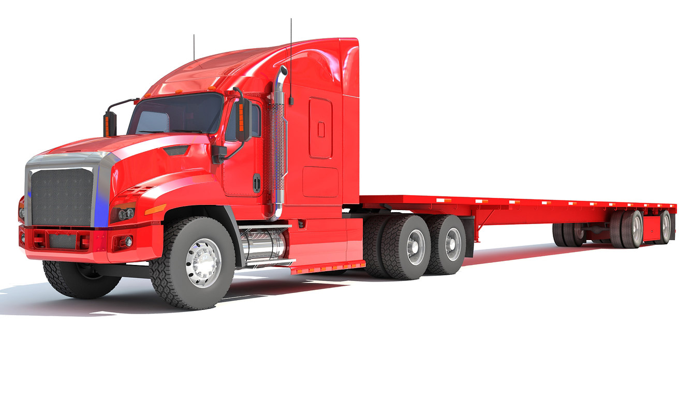
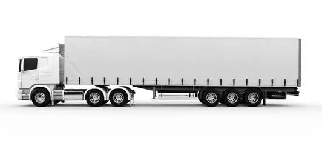

Camión rígido
Este camión de carga suele tener una longitud total de 12 metros, incluyendo el remolque o la caja y con una capacidad de carga de 32 toneladas.
Estos tipos de trailers de carga suelen ser usados para el reparto y distribución de mercancías. Sobre todo en zonas urbanas.

Camión de plataforma abierta
Este camión de carga pesada cuenta con una plataforma sin cobertura y es usualmente utilizado para transportar materiales relacionados a la construcción, material pesado a granel o contenedores.
Algunos de ellos también pueden contener plataformas laterales para impedir que la carga se desplace hacia otros lados y exista el peligro de que se caiga.
